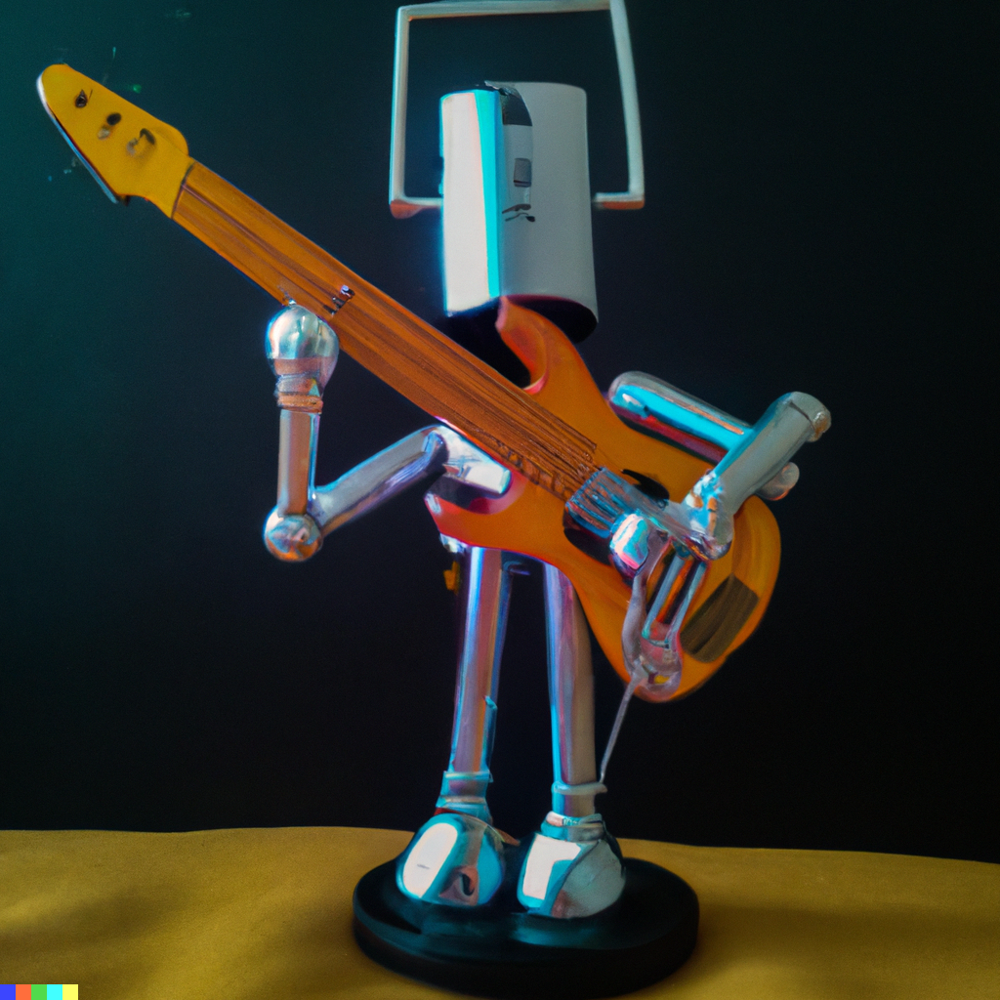

{{ EditandoCancion.Nombre }} - {{ EditandoCancion.Autor }}
{{ cancion.Nombre }} - {{ cancion.Autor }}
{{ tocandocompas }} / {{ totalcompas }}
_
{{ nota }}
Mayor
5
7

Aca el desarrollo del bajista
{{ nota }}
Mayor
5
7
{{ modo.nombre}}
{{ modo.nombre}}
{{ instrumento.nombre }}
BAJO:
{{ cu }}
{{ teclas.nombre }}
{{ cu[teclasid] }}
{{ instrumento.numero }}
Instrumento:
{{ instrumento.nombre}}
Cargar
{{ estado_cargainstrumento }}
{{ nota }}{{ octava }}
{{ nota.Nombre }}
{{ modo.nombre}}
{{ modo.nombre}}
{{ nota.Nombre }}
{{ p.Texto }}